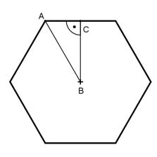
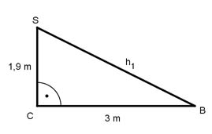

Aufgabe 238 Ein Pavillon hat als Dach eine regelmäßige sechseckige Pyramide. Sie hat Seiten von 3,5 m Länge und eine Höhe von 1,9 m. Wie teuer wird die Bedachung aus Kupfer, wenn 1 m² 105 € kostet?  In einem regelmäßigen Sechseck sind die Seiten gleich lang wie der Radius. Satz von Pythagoras im Dreieck ABC: AB = Seitenlänge = 3,5 m = r BC = h AC = halbe Seitenlänge = 3,5 m/2 = 1,75 m AB² = BC² + AC² 3,5² m² = h² + 1,75² m² | -1,75² m² h² = 3,5² m² - 1,75² m² h² = 9,1875 m² |√ h = 3 m Seitenhöhe h1:  Satz von Pythagoras im Dreieck CBS: h1² = 3² m² + 1,9² m² h1² = 12,61 m² |√ h1 = 3,55 m Sechseckdachfläche A: 3,5 m * 3,55 m A = 6 * ----------------- = 37,275 m² 2 Kosten = 37,275 m² * 105 €/m² = 3 914 €